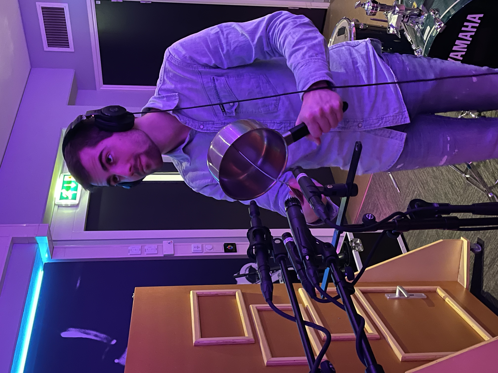
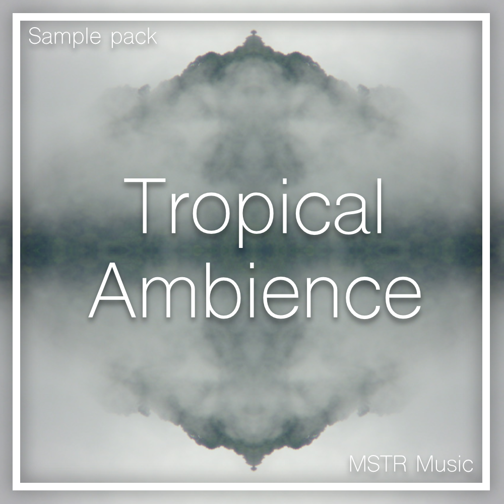
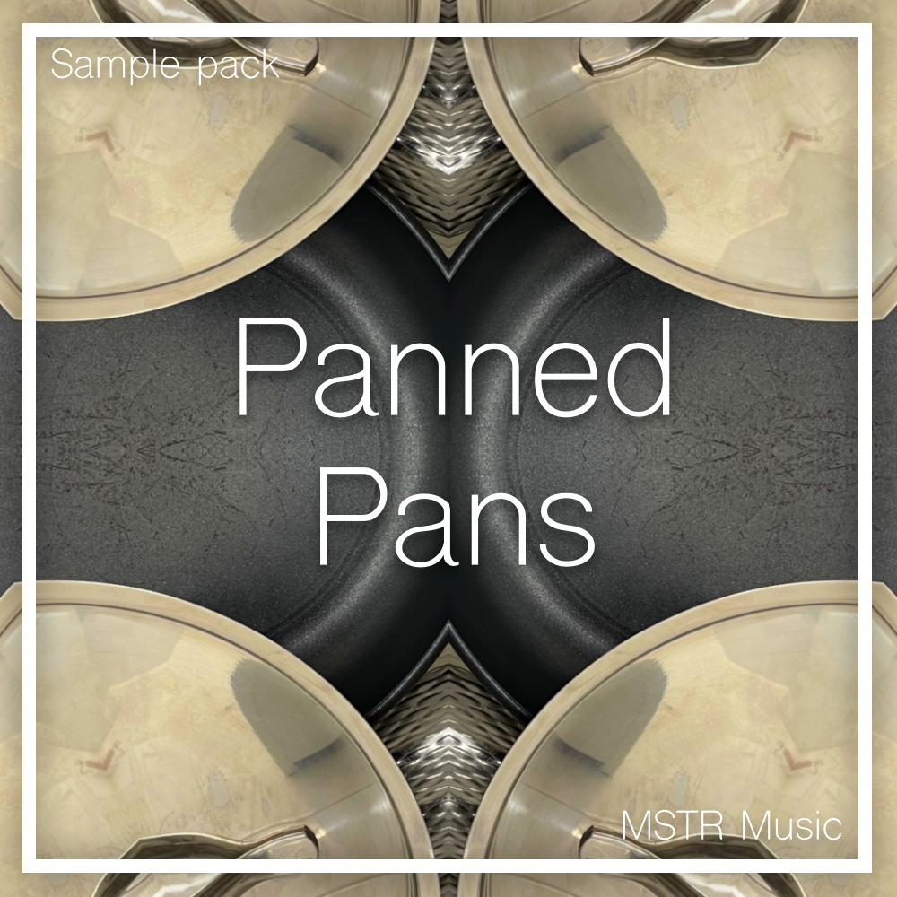

 It can be tiring to work on music for a long time. That's why I like to go out with a field recorder every once in a while and capture some interesting sounds. Feel free to download and use these sample packs for your own projects!  